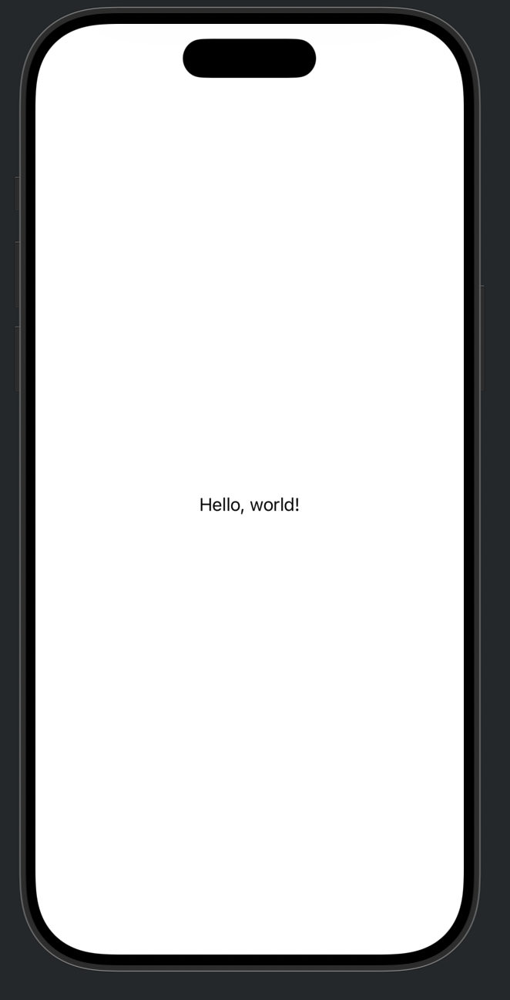
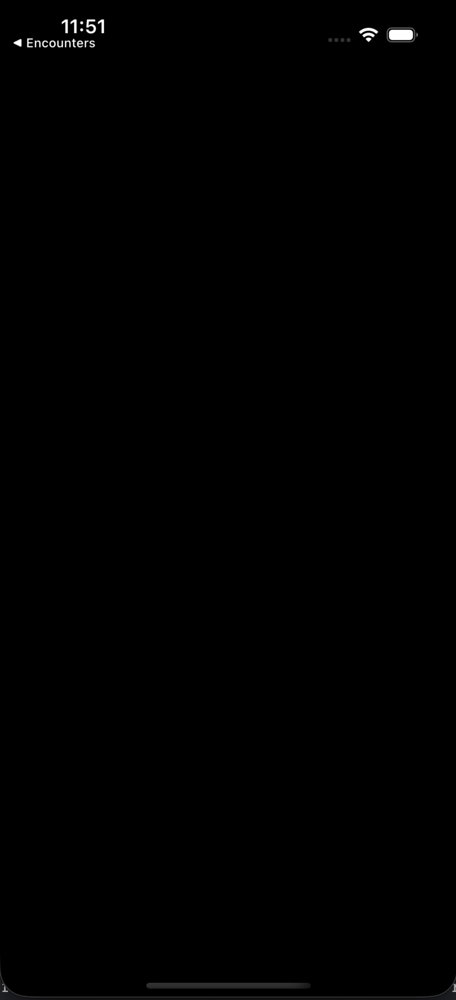
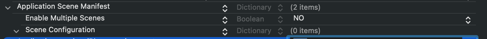

I learned modern iOS development through SwiftUI. That makes UIKit feel slightly backwards: most explanations start with UIKit and use SwiftUI as the comparison, while I need the map to work in the other direction.
The most fun way to do this looks to me like rebuilding familiar SwiftUI ideas in UIKit, then looking underneath both frameworks to understand what the system is actually doing.
For our first step, we will take the smallest useful SwiftUI app—a “Hello, world!” then try to figure out whats going on under the hood.
The starting point
Here is the SwiftUI app:
import SwiftUI
@main
struct HelloWorldApp: App {
var body: some Scene {
WindowGroup {
ContentView()
}
}
}
struct ContentView: View {
var body: some View {
Text("Hello, world!")
}
}The goal here is to see what SwiftUI is abstracting away from, how and where it uses UIKit and then display the same view in both frameworks.
Run the SwiftUI baseline
Before changing anything, run the SwiftUI version once. Select the app's scheme and an iPhone simulator, then press ⌘R.

What does @main actually do?
@main is a Swift language feature, not a SwiftUI feature. It marks one type as the program's entry point.
The marked type must provide a static main() method. We do not write that method on HelloWorldApp; the App protocol supplies it for us. Conceptually, Swift turns our app declaration into something like:
HelloWorldApp.main()This is the first layer SwiftUI hides: our App conformer is not merely a container for body. It also participates in starting the process.
You can read the swift evolution proposal here if you're curious: SE-0281: @main.
Recreating SwiftUI Hello World in UIKit
For this exercise, stay in the same Xcode project. We are going to replace SwiftUI with UIKit.
Add a file named main.swift.
import UIKit
UIApplicationMain(
CommandLine.argc,
CommandLine.unsafeArgv,
nil,
NSStringFromClass(AppDelegate.self)
)UIApplicationMain starts the UIKit application and its main event loop. Most app code never needs to care about the first two values. The important relationship is between the one application object and the delegate UIKit creates for it.
Cannot find 'AppDelegate' in scope
That is expected: main.swift names an app delegate that we have not created yet. The compiler has shown us the next piece of the launch path.
Add the app delegate
Create AppDelegate.swift:
import UIKit
final class AppDelegate: NSObject, UIApplicationDelegate {
func application(
_ application: UIApplication,
didFinishLaunchingWithOptions launchOptions: [
UIApplication.LaunchOptionsKey: Any
]? = nil
) -> Bool {
true
}
func application(
_ application: UIApplication,
configurationForConnecting session: UISceneSession,
options: UIScene.ConnectionOptions
) -> UISceneConfiguration {
let configuration = UISceneConfiguration(
name: "Default Configuration",
sessionRole: session.role
)
configuration.delegateClass = SceneDelegate.self
return configuration
}
}Why inherit from NSObject? UIApplicationDelegate inherits from NSObjectProtocol. Inheriting from NSObject gives our class the Objective-C runtime behaviour UIKit expects.
The two methods have different jobs:
- didFinishLaunchingWithOptions finishes process-level setup.
- configurationForConnecting tells UIKit how to configure a new scene.
In a scene-based app, the app delegate launches the process; a scene delegate builds each instance of the interface.
Cannot find 'SceneDelegate' in scope
AppDelegate now exists, but it asks UIKit to use a scene delegate that does not exist yet. That gives us our next file.
Build the scene
Create SceneDelegate.swift:
import UIKit
final class SceneDelegate: UIResponder, UIWindowSceneDelegate {
var window: UIWindow?
func scene(
_ scene: UIScene,
willConnectTo session: UISceneSession,
options: UIScene.ConnectionOptions
) {
guard let windowScene = scene as? UIWindowScene else {
return
}
let rootViewController = UIViewController()
rootViewController.view.backgroundColor = .systemBackground
let helloWorldLabel = UILabel()
helloWorldLabel.text = "Hello, world!"
helloWorldLabel.translatesAutoresizingMaskIntoConstraints = false
rootViewController.view.addSubview(helloWorldLabel)
NSLayoutConstraint.activate([
helloWorldLabel.centerXAnchor.constraint(
equalTo: rootViewController.view.centerXAnchor
),
helloWorldLabel.centerYAnchor.constraint(
equalTo: rootViewController.view.centerYAnchor
),
])
let window = UIWindow(windowScene: windowScene)
window.rootViewController = rootViewController
self.window = window
window.makeKeyAndVisible()
}
}There is more ceremony than Text("Hello, world!"), but every line has a clear responsibility:
- Confirm that UIKit gave us a
UIWindowScene. - Create a root view controller.
- Create and configure a label.
- Add the label to the view hierarchy.
- Constrain it to the centre.
- Create a window for this scene.
- Install the root view controller.
- Retain the window and make it visible.
'main' attribute cannot be used in a module that contains top-level code
Both delegate types are now in scope, so the compiler reaches the conflict between the top-level code in main.swift and SwiftUI's existing @main entry point.
Hand the entry point to UIKit
An app may have only one entry point. Comment out the @main attribute on HelloWorldApp. The SwiftUI views and previews can stay in the project; main.swift now starts the app.
// @main
struct HelloWorldApp: App {
var body: some Scene {
WindowGroup {
ContentView()
}
}
}Run it: a black screen
Build and run again. The compiler errors are gone and the app launches, but instead of “Hello, world!” we get a black screen.

We created a SceneDelegate, but the target has not opted in to UIKit's scene-based lifecycle. UIKit is therefore not asking that delegate to construct the window.
Opt in to scenes
Make sure the target's Info settings contain an Application Scene Manifest (UIApplicationSceneManifest).

- Set Enable Multiple Windows to
NO. - Keep a window application session role.
- We do not need to name the scene delegate in the manifest because the app delegate supplies
SceneDelegate.selfin code.
Build and run the UIKit version
We now have all three pieces of the UIKit launch path: main.swift, AppDelegate.swift, and SceneDelegate.swift. Before pressing Run, check that Xcode is actually building those files into the same app target.
- The SwiftUI
@mainapp declaration is commented out or removed from this target. main.swift,AppDelegate.swift, andSceneDelegate.swiftall have the app target selected under Target Membership.- The target does not reference a main storyboard.
- The target's Info settings contain an Application Scene Manifest.
- The selected scheme belongs to the app target you just modified.
Build with ⌘R.
UIKit is now drawing the same screen
The window is visible, the root view controller owns the screen, and Auto Layout has centred the label. There is no SwiftUI view in this launch path.
What looked like one Text declaration is now a UIKit application, scene, window, view controller, label, and two active constraints.
The SwiftUI-to-UIKit map
| SwiftUI idea | UIKit counterpart in this example |
|---|---|
| @main | main.swift as the program entry point |
| App | Launch behaviour split across UIApplicationMain and delegates |
| WindowGroup | A scene configuration and UIWindowSceneDelegate |
| ContentView | The root UIViewController and its view hierarchy |
| Text | UILabel |
| Declarative centring | Auto Layout centre constraints |
What SwiftUI is hiding
Our UIKit chain is now:
SwiftUI expresses the same broad responsibilities with:
The second version is shorter because SwiftUI owns the bridge between those declarations and UIKit's application, scene, and window infrastructure.
Exactly how that private bridge is implemented is not part of SwiftUI's public contract. We can observe it with a debugger.
That is where we will go next.